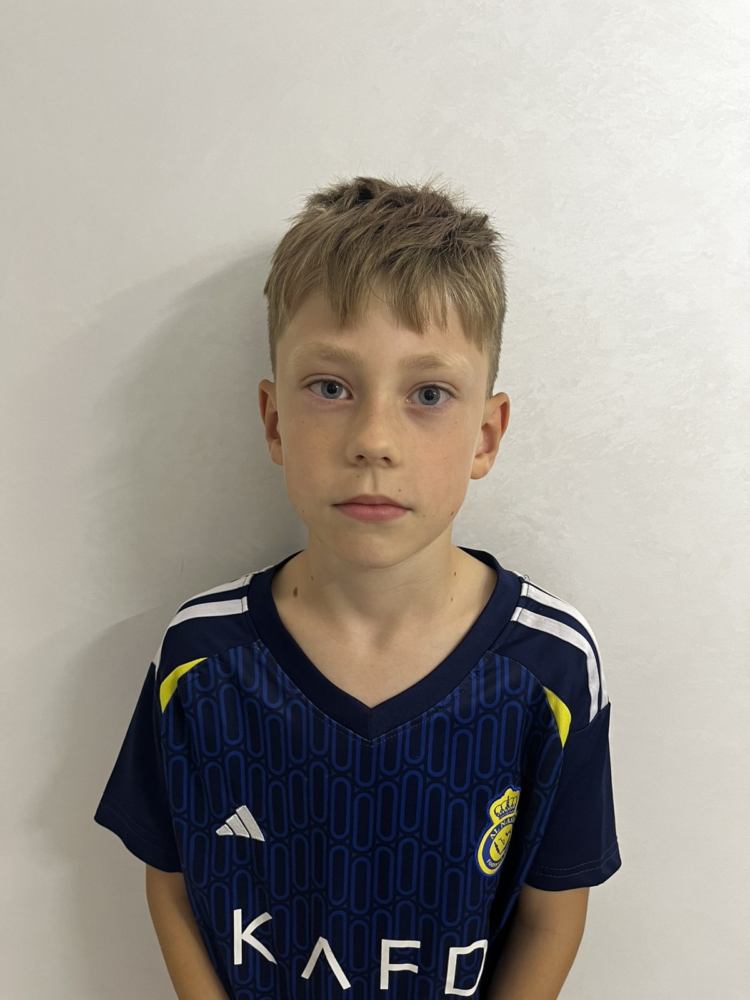

Інформація про гравця

№
Зубчук Захар
Позиція: Універсал
Команда: Polissya Kids 16L - U-10
Сезон: 2026
0
Матчів
0
Голів
0
Асистів
🏆 Досягнення
- Учасник турнірів 2026 :
- Призер футбольних змагань
- Найкращий гравець команди